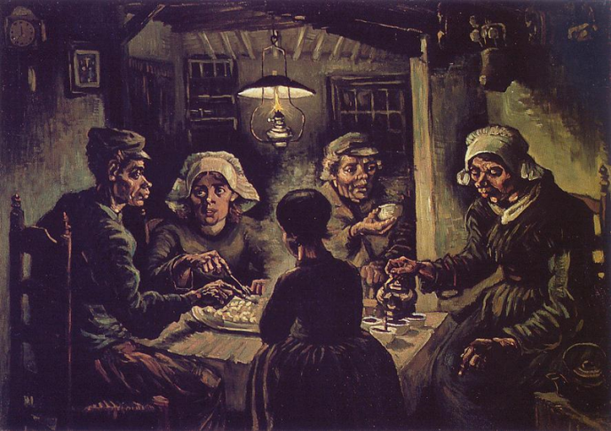
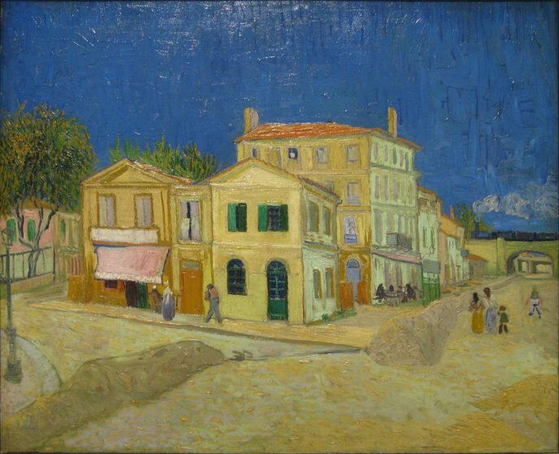
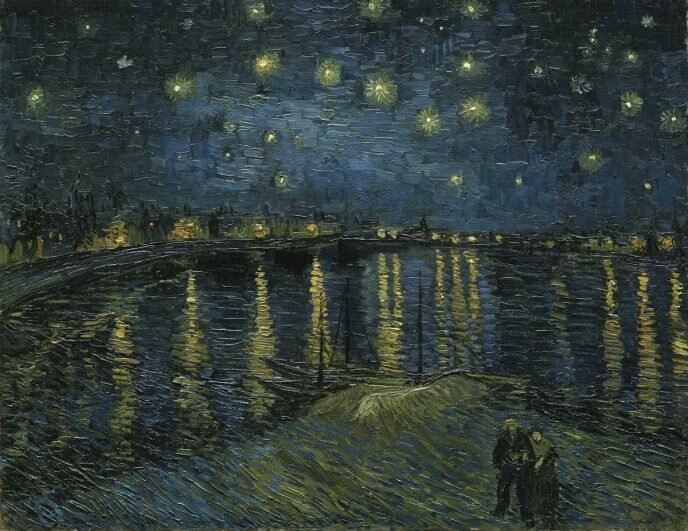
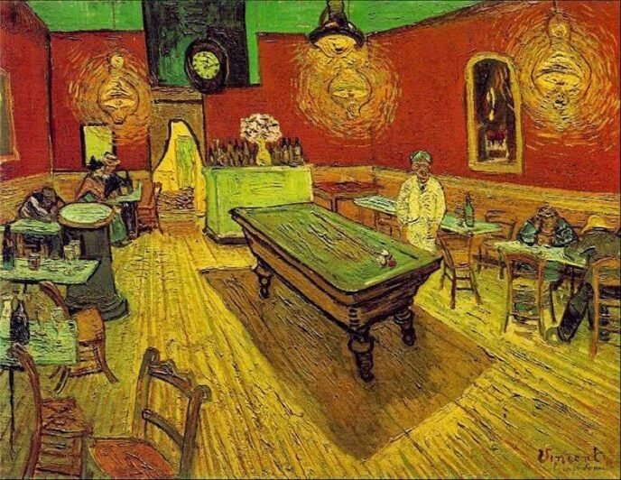
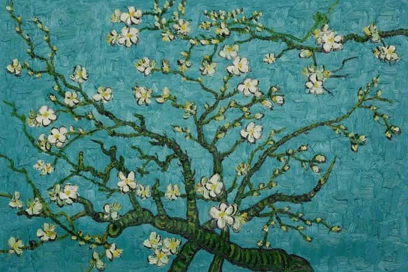
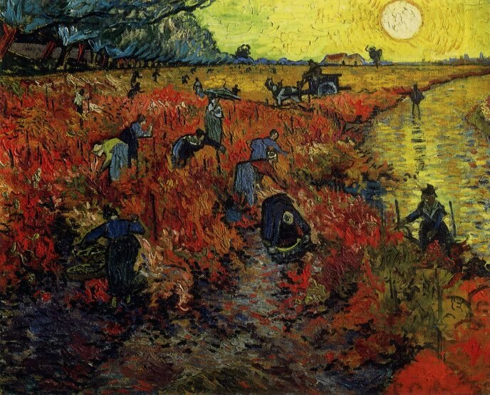
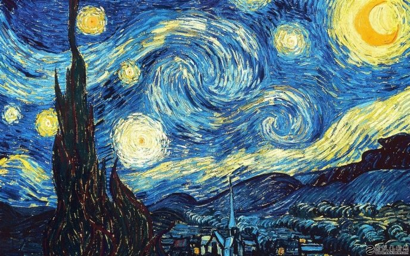
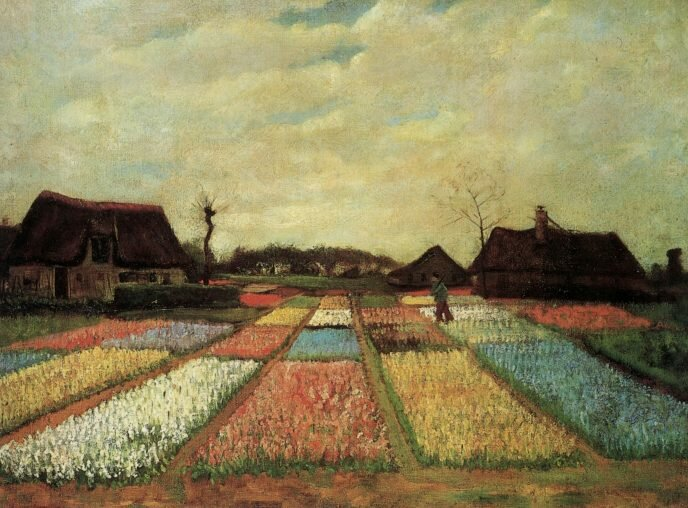

Добро пожаловать в Галерею Ван Гога Онлайн. Здесть вы можете посмотреть на картины данного художника и просто хорошо провести время
Едоки картофеля
Желтый дом
Желтая ночь над Роной
Ночное кафе
Цветущие ветки миндаля
Красные виноградники в Арле
Звездная ночь
Луковичные поля
